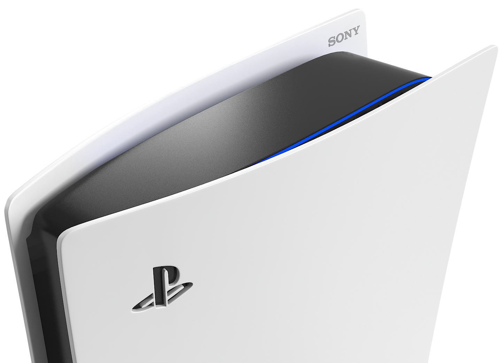

Die Technologie hinter der PlayStation 5

Die PlayStation 5 ist ein technologisches Meisterwerk. Mit ihrem AMD Zen 2-Prozessor, der leistungsstarken RDNA 2 GPU und ultraschnellen SSD ermöglicht sie eine unvergleichliche Gaming-Erfahrung.
Highlights:
- 8-Kern-CPU mit 3,5 GHz
- Raytracing-Technologie für realistische Licht- und Schatteneffekte
- 4K-Auflösung bei bis zu 120 FPS
- Tempest 3D AudioTech für immersiven Sound
- Erweiterbarer Speicher mit NVMe-SSDs